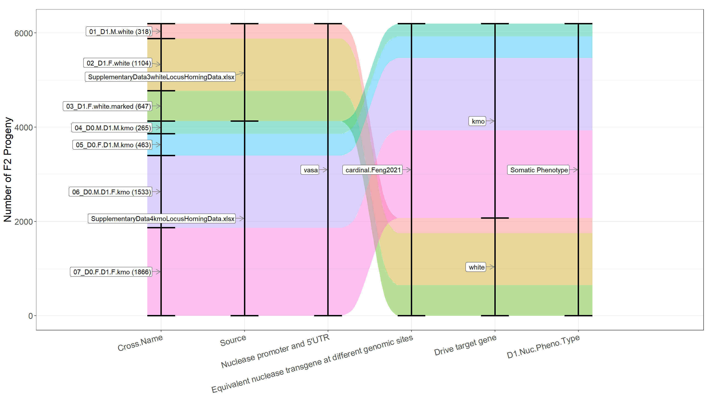
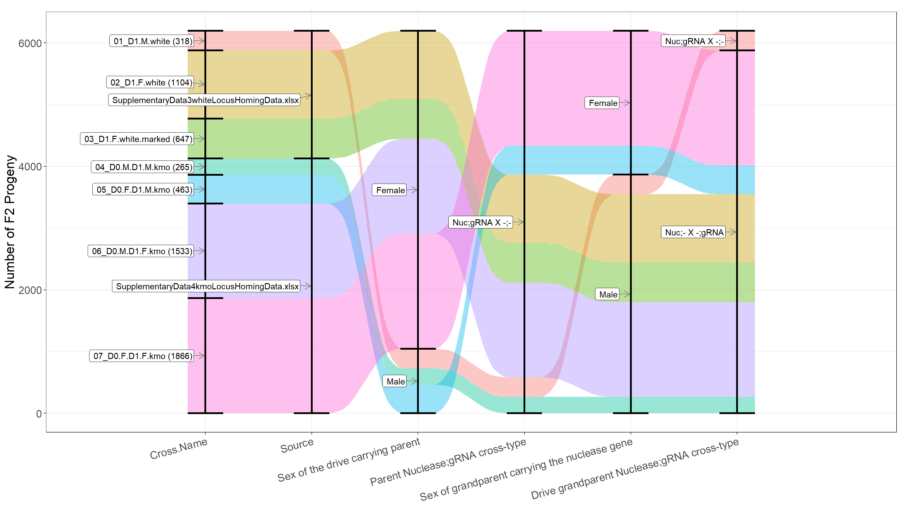
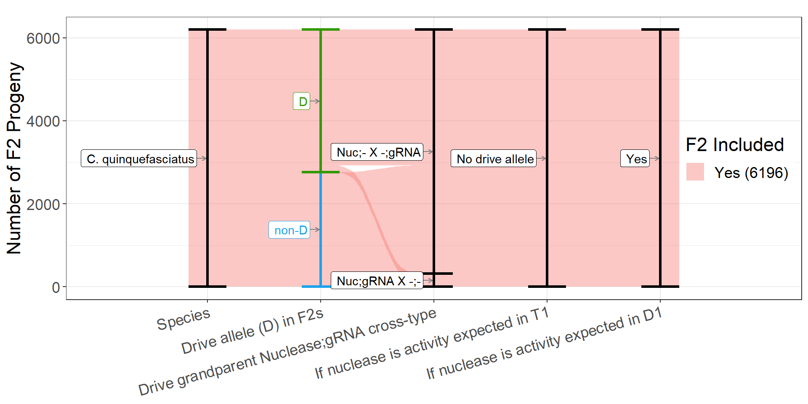
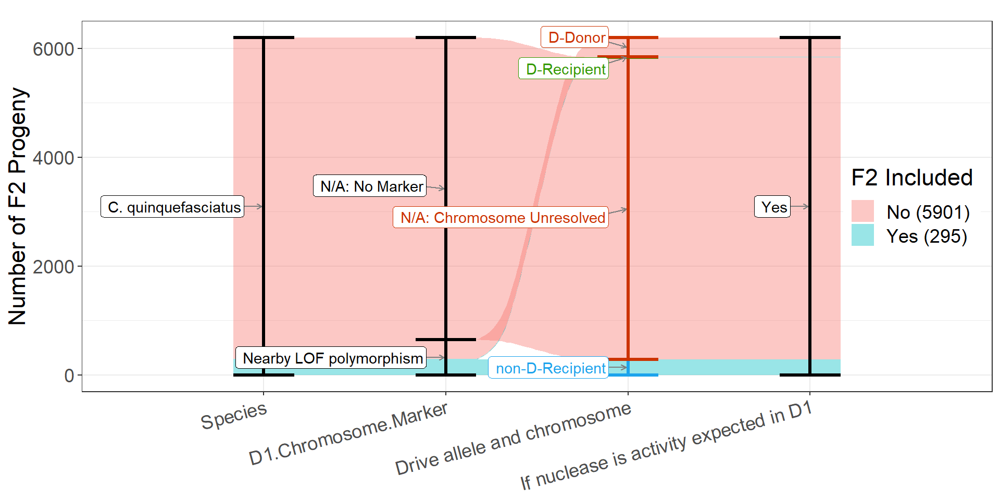
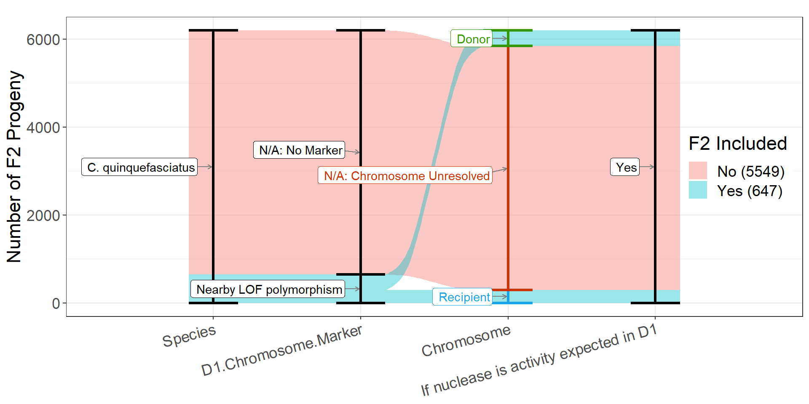
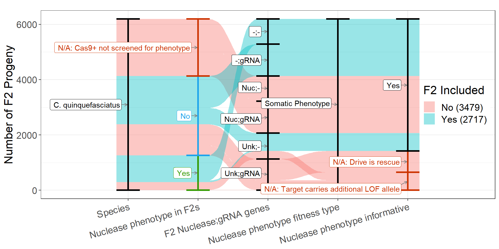
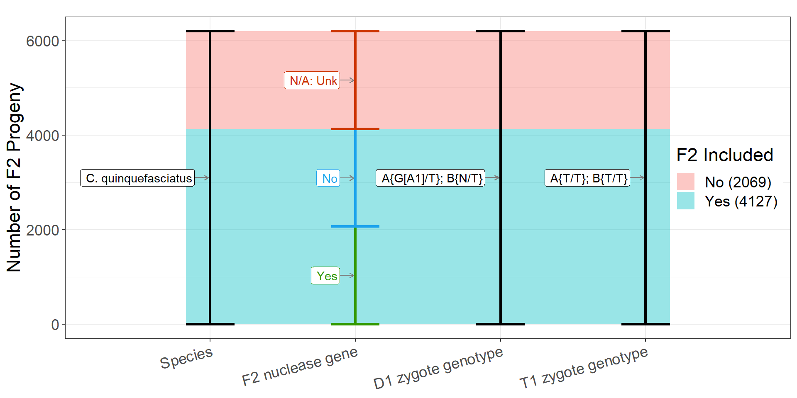

Homing gene drive journal club
What is this presentation?
- Slides are generated in R from a meta-analysis data set and screenshots from the paper
- Feedback on my interpretation of the paper and how best to present it is very much appreciated
- In addition to these JCs, we intended to send slides to the original authors to allow them the opportunity to find mistakes in our interpretation of their data
- Suggestions you make can be simultaneously applied to the code for >80 papers: https://docs.google.com/spreadsheets/d/1kzc8SkY2fb0NEeGcFSwGPR9j_cCKWgiv9lECuCD97UI/edit?usp=sharing
- The same analysis pipeline and figures are used for a manuscript in preparation and a webtool: https://sverkuijl.shinyapps.io/GeneDrive/
- Currently the meta-analysis team is Sebald Verkuijl, Alessa Weiler, Edward Ivimey-Cook, Nikolai Windbichler, Philip Leftwich, Michael Bonsall
Paper title and authors.

Female southern house mosquito, Culex quinquefasciatus Say, ovipositing an egg raft.

Culex quinquefasciatus is the main vector of the human filarial nematode, Wuchereria bancrofti, throughout the tropical and subtropical world

Cx. quinquefasciatus can transmit major avian pathogens (Avian malaria, West Nile virus, Avian poxviruses)
Gene drives can spread autonomously from low to high frequency in a population, despite not conferring a fitness advantage

Homing gene drive inheritance rates for similar transgenes have varied between species.
Schematic outline of targeted gene locations in Cx. quinquefasciatus chromosome I

Photo of a transgenic lines
Presence of the backbone in the transgene, suggesting the tandem insertions.
High level nuclease and target features for all crosses
Drive element DNA maps (blue = url) and attributes
| Papers this element appears in | Target locus | Drive | Drive:Target aligned (these Benchling links have issues) | Drive allele size | gRNA promoter(s) | gRNA target seq | gRNA scaffold | non aligning 5’ seq | non aligning 3’ seq | gRNA PAM orientation | |
|---|---|---|---|---|---|---|---|---|---|---|---|
| 21 | Harvey-Samuel2023 | white | Drive | Drive:Target | 4198 | A1:CqU6.653(CPIJ039653) | A1:CGTGATCAACGTGTTCT/CCGCGG | A1:WT-76nt_O+5bp | 3’ | ||
| 118 | Harvey-Samuel2023 | kmo | Drive | Drive:Target | 3429 | A1:Cq7SK.933(CPIJ039933) | A1:GTACAGTGCGGTCCGCA/AGGAGG | A1:BB25-80nt | 3’ |
Nuclease element DNA maps (blue = url) and attributes
| Papers this element appears in | Nuclease insertion index/locus | Nuclease carrying element | Promoter + 5UTR size (bp) | Nuclease codon opt | 3 UTR size (bp) | |
|---|---|---|---|---|---|---|
| 21 | Harvey-Samuel2023 | cardinal.Feng2021 | vasa_Cas9-NLS_vasa | 2415 | Unk | 762 |
Cross types (sex/nuclease;gRNA)
Genetic cross scheme for the M-to-m homing analysis

Genetic cross scheme of the m-to-m homing analysis

Inheritance rates of white-gRNA6 (eGFP) and vasa-cas9 (DsRed) transgenes in the G2 progeny
Graphical representation of the experimental design, which allows to track donor and receiver chromosomes

Genetic cross scheme used to test homing efficiencies using a marked chromosome approach.

Overall inheritance rates (c) and homing rates (d) calculated using the receiver chromosomes only, in the marked-chromosome strategy
%20and%20homing%20rates%20(d)%20calculated%20using%20the%20receiver%20chromosomes%20only,%20in%20the%20marked-chromosome%20strategy.png)
Genetic cross scheme for the kmo-gRNA transgene and vasa-Cas9
The inheritance rates of kmo-gRNA (marked by Hr5IE1-DsRed) and vasa-Cas9 (marked by Opie2-DsRed) transgenes in the G2 progeny
Deposited RNP leads to kmo mosaicism in G2 progeny

What gene drive associated metrics were we able to record for this paper (null = absent)
| Metric | Description | Values.in.paper |
|---|---|---|
| Drive allele inheritance rate | The rate at which a specific genetic allele is passed from the D1 parent, which also carries a target allele susceptible to cleavage by nuclease components expressed in that individual, as measured in the F2 offspring. | Pos Neg |
| Drive allele inheritance rate of non-standard crosses | The rate of drive allele inheritance under non-standard crossing conditions, such as intercrossing with another drive carrier, pairing the drive allele with a cut-resistant allele, homozygosity for the drive allele, or in the absence of Cas9 expressing elements. | Null |
| Drive allele inheritance (Shadow drive) | The rate of drive allele inheritance that would only be expected to occur through shadow drive. Shadow drive occurs when deposited nuclease components mediate inheritance bias in the germline of the deposition recipient | Null |
| Recipient chromosomes with a drive allele | In a hemizygous drive carrier, the drive allele is designed to copy itself from the “donor” chromosome to the “recipient” chromosome. In some studies, the homologous chromosomes can be differentiated by a marker separate from the drive allele. This metric reports the fraction of recipient chromosomes carrying the drive allele out of all recipient chromosomes. | Null Pos Neg |
| Drive to r2 alleles on recipient chromosome | Drive to r2 alleles on recipient chromosome | Null |
| Donor chromsome inheritance rate | Donor chromsome inheritance rate | Null Pos Neg |
| Somatic phenotype rate | Somatic phenotypes are changes in the phenotype that are generated by the action of the drive nuclease. In most cases, the somatic phenotype is generated by a haplosufficient endogenous gene into which the gene drive is inserted and which the drive also targets the wild-type version. In individuals heterozygous for the knock-out gene drive allele, embryonic or somatic disruption of the recipient chromosome’s target gene will result in a somatic phenotype. Note that the sex of the drive-carrying parent is not considered for the pairing of somatic phenotype data (it is instead replaced by the sex of the nuclease-carrying parent). | Null Neg Pos |
| non-wildtype alleles | non-wildtype alleles. This includes functional and non-functy | Null |
| Target gene disruption rate | Target gene disruption rate | Null |
| Resistance alleles classified as functional | Resistance alleles classified as functional | Null |
| Female F2s | The fraction of female F2 progeny. | Null |
| Nuclease transgene inheritance | Nuclease transgene inheritance | Null Pos Neg |
| Drive:Marker recombination rate | Drive:Marker recombination rate | Null |
The subset of factors we deem essential for comparing data (next slides are figures of those that vary)
| Factor | Description | Levels |
|---|---|---|
| Publication | A unique short identifier of the source publication. | Harvey-Samuel2023 |
| Misc.Factor | A grouping of miscellaneous differences between crosses that isn’t fully captured by other factors in the dataset. If something is repeatedly investigated within the dataset, a new dedicated factor will be created. | NA |
| Species | The name of the organism being studied. | C. quinquefasciatus |
| Strain | Description of the strain used in cross. | California Unk |
| Nuclease.Insertion.Variant | An identifier of equivalent nuclease expressing elements inserted at different loci. Note that we do not consider independently derived HDR events at the same locus as insertion variants. If a transgene is reused in a subsequent study, we use the same insertion identifier from the first publication. | cardinal.Feng2021 |
| D1.Nuc.Pheno | A phenotype associated with nuclease activity. Most often, a phenotype that is informative about the cutting of the target allele in an individual heterozygous for the drive allele and a target allele. | No Yes_Mos |
| D1.Sex | D1 is the F1 parent that is being evaluated, and D1.Sex is the sex of that group/individual. In almost all cases, one sex is of interest for the gene drive process in the cross (e.g., drive-carrying males crossed to wild-type females). In most crosses, this is an individual or group of individuals that are double heterozygous for the gRNA and Cas9 drive element. For preparation / control crosses (e.g., gRNA individuals crossed to Cas9 carriers), the sex carrying the element designed to be biased is designated as D1. | Male Female |
| T1.Cutting.Expected | The expectation of whether a target allele in individual could be cut. This only takes into account the presence of Cas9 and at least one gRNA gene, and the presence of a valid target. | No drive allele |
| D0.Nuclease.Sex | The sex of the nuclease-carrying grandparent. | Male Female |
| D0.NG_Unsorted | A combination of the D0 nuclease/gRNA descriptions indepedent of sex. This means that if the sexes of the nuclease carrying D0 grandparents are swapped, the value is the same. | Nuc;gRNA X -;- Nuc;- X -;gRNA |
| F2.Nuc.Pheno.Locus | The locus identifier associated with the nuclease activity phenotype. | A |
| DoubleEntryNote | A note on progeny that are represented multiple times within the same cross. This is sometimes needed when two metrics have been measured for the same group of progeny but cannot be simultaneously assigned. For example: Overall Cas9 and gRNA inheritance rates are known, but information of what | NA |
| F2.Nuc.Pheno.Gene | The gene associated with the nuclease activity phenotype. | white kmo |
| F2.Nuc.Pheno.FitType | A description of the type of phenotype associated with the nuclease activity phenotype. | Somatic Phenotype |
| F2.Nuc.Pheno.Sufficiency | A note on whether the nuclease activity phenotype gene is expected to be haplosufficent or haploinsufficient. | Haplosufficient |
| Nuclease.Promoter.5UTR | The nuclease promoter and the 5’UTR involved in this cross. | vasa |
| Nuclease.Gene | The nuclease gene involved in this cross. | Cas9 |
| D.Target.Gene | The gene/locus targeted by the gRNAs/DNA-binding protein involved in this cross. | white kmo |
| D.Target.Fitness | A description of the expected consequence of loss of function of the target gene. | Putative Neutral |
| D.Target.Sufficiency | A note on whether the target gene is expected to be haplosufficent or haploinsufficient. | Haplosufficient |
| D.gRNA.Target.Sequence | The DNA-binding protein or gRNA+PAM target sequence. The expected cut site is indicated with a “/” symbol. | A1:CGTGATCAACGTGTTCT/CCGCGG A1:GTACAGTGCGGTCCGCA/AGGAGG |
| D.gRNA.Target.Site | A description of the functional significance of gRNA target sequence within the target gene. | A1: CDS |
| D.gRNA.Promoter | A list of the gRNA promoters involved in this cross. The names and sequences of the promoters are matched to those described in Anderson et al. 2020. | A1:CqU6.653(CPIJ039653) A1:Cq7SK.933(CPIJ039933) |
| F2.Sex | The sex of the F2 progeny. | Male&Female |
| F2.KO.Req | Number of alleles required to be disrupted in this F2 genotype to disrupt the function of the target gene. This includes germline mutations where the disruption occurred in the parent. | rescue 2 0 1 |
| F2.NG | Notation of the presence of the nuclease gene and at least one gRNA capable of cutting a target allele at the drive locus. | Unk;gRNA Unk;- Nuc;gRNA -;gRNA Nuc;- -;- |
| F1.Possible.Germline.Mutation.Expected | Notation of the possibility of a resistance mutation having been inherited by this F2. | No Yes |
| F1.Nuclease.Sex | The sex of the nuclease-carrying parent. | Male Female |
| F1.NG_Unsorted | A combination of the D1 nuclease/gRNA descriptions indepedent of sex. This means that if the sexes of the nuclease carrying parent are swapped, the value is the same. | Nuc;gRNA X -;- |
| D1.GESP.Expected | Notation of the possibility of a nuclease component being biased in the D1 individual only in cases where cutting may be expected. | -;gRNA |
| T1.GESP.Expected | Notation of the possibility of a nuclease component being biased in the T1 individual only in cases where cutting may be expected. | No |
Drive_Allele_Inheritance inclusion criteria
X-axis: In the data selection Sankey diagrams, the green labels and columns indicate values considered positive for the metric being measured. The blue labels and columns indicate values that are negative but are still valid and necessary to calculate an overall rate. Red labels and columns indicate values that cause those F2 counts to be excluded, and black labels and columns indicate neutral values that do not affect the metric calculation. If one or more values cause data to be excluded, the streams between columns representing those progeny are coloured red.
Y-axis: F2 count.
Drive_Allele_Inheritance:ID
X-axis: Cross Number_A unique short identifier of the source publication.
Y-axis: The rate at which a specific genetic allele is passed from the D1 parent, which also carries a target allele susceptible to cleavage by nuclease components expressed in that individual, as measured in the F2 offspring.
O-O: Lines are drawn between paired crosses that are identical for the other essential factors, apart from the respective X-axis factor.
Drive_Allele_Inheritance:Strain
X-axis: Description of the strain used in cross.
Y-axis: The rate at which a specific genetic allele is passed from the D1 parent, which also carries a target allele susceptible to cleavage by nuclease components expressed in that individual, as measured in the F2 offspring.
O-O: Lines are drawn between paired crosses that are identical for the other essential factors, apart from the respective X-axis factor.
Drive_Allele_Inheritance:D1.Nuc.Pheno
X-axis: A phenotype associated with nuclease activity. Most often, a phenotype that is informative about the cutting of the target allele in an individual heterozygous for the drive allele and a target allele.
Y-axis: The rate at which a specific genetic allele is passed from the D1 parent, which also carries a target allele susceptible to cleavage by nuclease components expressed in that individual, as measured in the F2 offspring.
O-O: Lines are drawn between paired crosses that are identical for the other essential factors, apart from the respective X-axis factor.
Drive_Allele_Inheritance:D1.Sex
X-axis: D1 is the F1 parent that is being evaluated, and D1.Sex is the sex of that group/individual. In almost all cases, one sex is of interest for the gene drive process in the cross (e.g., drive-carrying males crossed to wild-type females). In most crosses, this is an individual or group of individuals that are double heterozygous for the gRNA and Cas9 drive element. For preparation / control crosses (e.g., gRNA individuals crossed to Cas9 carriers), the sex carrying the element designed to be biased is designated as D1.
Y-axis: The rate at which a specific genetic allele is passed from the D1 parent, which also carries a target allele susceptible to cleavage by nuclease components expressed in that individual, as measured in the F2 offspring.
O-O: Lines are drawn between paired crosses that are identical for the other essential factors, apart from the respective X-axis factor.
Drive_Allele_Inheritance:D0.Nuclease.Sex
X-axis: The sex of the nuclease-carrying grandparent.
Y-axis: The rate at which a specific genetic allele is passed from the D1 parent, which also carries a target allele susceptible to cleavage by nuclease components expressed in that individual, as measured in the F2 offspring.
O-O: Lines are drawn between paired crosses that are identical for the other essential factors, apart from the respective X-axis factor.
Drive_Allele_Inheritance:D0.NG_Unsorted
X-axis: A combination of the D0 nuclease/gRNA descriptions indepedent of sex. This means that if the sexes of the nuclease carrying D0 grandparents are swapped, the value is the same.
Y-axis: The rate at which a specific genetic allele is passed from the D1 parent, which also carries a target allele susceptible to cleavage by nuclease components expressed in that individual, as measured in the F2 offspring.
O-O: Lines are drawn between paired crosses that are identical for the other essential factors, apart from the respective X-axis factor.
Drive_Allele_Inheritance:F2.Nuc.Pheno.Gene
X-axis: The gene associated with the nuclease activity phenotype.
Y-axis: The rate at which a specific genetic allele is passed from the D1 parent, which also carries a target allele susceptible to cleavage by nuclease components expressed in that individual, as measured in the F2 offspring.
O-O: Lines are drawn between paired crosses that are identical for the other essential factors, apart from the respective X-axis factor.
Drive_Allele_Inheritance:D.Target.Gene
X-axis: The gene/locus targeted by the gRNAs/DNA-binding protein involved in this cross.
Y-axis: The rate at which a specific genetic allele is passed from the D1 parent, which also carries a target allele susceptible to cleavage by nuclease components expressed in that individual, as measured in the F2 offspring.
O-O: Lines are drawn between paired crosses that are identical for the other essential factors, apart from the respective X-axis factor.
Drive_Allele_Inheritance:D.gRNA.Target.Sequence
X-axis: The DNA-binding protein or gRNA+PAM target sequence. The expected cut site is indicated with a “/” symbol.
Y-axis: The rate at which a specific genetic allele is passed from the D1 parent, which also carries a target allele susceptible to cleavage by nuclease components expressed in that individual, as measured in the F2 offspring.
O-O: Lines are drawn between paired crosses that are identical for the other essential factors, apart from the respective X-axis factor.
Drive_Allele_Inheritance:D.gRNA.Promoter
X-axis: A list of the gRNA promoters involved in this cross. The names and sequences of the promoters are matched to those described in Anderson et al. 2020.
Y-axis: The rate at which a specific genetic allele is passed from the D1 parent, which also carries a target allele susceptible to cleavage by nuclease components expressed in that individual, as measured in the F2 offspring.
O-O: Lines are drawn between paired crosses that are identical for the other essential factors, apart from the respective X-axis factor.
Homed_Recipient_Chromosomes inclusion criteria
X-axis: In the data selection Sankey diagrams, the green labels and columns indicate values considered positive for the metric being measured. The blue labels and columns indicate values that are negative but are still valid and necessary to calculate an overall rate. Red labels and columns indicate values that cause those F2 counts to be excluded, and black labels and columns indicate neutral values that do not affect the metric calculation. If one or more values cause data to be excluded, the streams between columns representing those progeny are coloured red.
Y-axis: F2 count.
Homed_Recipient_Chromosomes:ID
X-axis: Cross Number_A unique short identifier of the source publication.
Y-axis: In a hemizygous drive carrier, the drive allele is designed to copy itself from the “donor” chromosome to the “recipient” chromosome. In some studies, the homologous chromosomes can be differentiated by a marker separate from the drive allele. This metric reports the fraction of recipient chromosomes carrying the drive allele out of all recipient chromosomes.
O-O: Lines are drawn between paired crosses that are identical for the other essential factors, apart from the respective X-axis factor.
Donor_to_Recipient_Chromsomes inclusion criteria
X-axis: In the data selection Sankey diagrams, the green labels and columns indicate values considered positive for the metric being measured. The blue labels and columns indicate values that are negative but are still valid and necessary to calculate an overall rate. Red labels and columns indicate values that cause those F2 counts to be excluded, and black labels and columns indicate neutral values that do not affect the metric calculation. If one or more values cause data to be excluded, the streams between columns representing those progeny are coloured red.
Y-axis: F2 count.
Donor_to_Recipient_Chromsomes:ID
X-axis: Cross Number_A unique short identifier of the source publication.
Y-axis: Donor chromsome inheritance rate
O-O: Lines are drawn between paired crosses that are identical for the other essential factors, apart from the respective X-axis factor.
Nuclease_Induced_Phenotype inclusion criteria
X-axis: In the data selection Sankey diagrams, the green labels and columns indicate values considered positive for the metric being measured. The blue labels and columns indicate values that are negative but are still valid and necessary to calculate an overall rate. Red labels and columns indicate values that cause those F2 counts to be excluded, and black labels and columns indicate neutral values that do not affect the metric calculation. If one or more values cause data to be excluded, the streams between columns representing those progeny are coloured red.
Y-axis: F2 count.
Nuclease_Induced_Phenotype:ID
X-axis: Cross Number_A unique short identifier of the source publication.
Y-axis: Somatic phenotypes are changes in the phenotype that are generated by the action of the drive nuclease. In most cases, the somatic phenotype is generated by a haplosufficient endogenous gene into which the gene drive is inserted and which the drive also targets the wild-type version. In individuals heterozygous for the knock-out gene drive allele, embryonic or somatic disruption of the recipient chromosome’s target gene will result in a somatic phenotype. Note that the sex of the drive-carrying parent is not considered for the pairing of somatic phenotype data (it is instead replaced by the sex of the nuclease-carrying parent).
O-O: Lines are drawn between paired crosses that are identical for the other essential factors, apart from the respective X-axis factor.
Nuclease_Induced_Phenotype:F2.KO.Req
X-axis: Number of alleles required to be disrupted in this F2 genotype to disrupt the function of the target gene. This includes germline mutations where the disruption occurred in the parent.
Y-axis: Somatic phenotypes are changes in the phenotype that are generated by the action of the drive nuclease. In most cases, the somatic phenotype is generated by a haplosufficient endogenous gene into which the gene drive is inserted and which the drive also targets the wild-type version. In individuals heterozygous for the knock-out gene drive allele, embryonic or somatic disruption of the recipient chromosome’s target gene will result in a somatic phenotype. Note that the sex of the drive-carrying parent is not considered for the pairing of somatic phenotype data (it is instead replaced by the sex of the nuclease-carrying parent).
O-O: Lines are drawn between paired crosses that are identical for the other essential factors, apart from the respective X-axis factor.
Nuclease_Induced_Phenotype:F2.NG
X-axis: Notation of the presence of the nuclease gene and at least one gRNA capable of cutting a target allele at the drive locus.
Y-axis: Somatic phenotypes are changes in the phenotype that are generated by the action of the drive nuclease. In most cases, the somatic phenotype is generated by a haplosufficient endogenous gene into which the gene drive is inserted and which the drive also targets the wild-type version. In individuals heterozygous for the knock-out gene drive allele, embryonic or somatic disruption of the recipient chromosome’s target gene will result in a somatic phenotype. Note that the sex of the drive-carrying parent is not considered for the pairing of somatic phenotype data (it is instead replaced by the sex of the nuclease-carrying parent).
O-O: Lines are drawn between paired crosses that are identical for the other essential factors, apart from the respective X-axis factor.
Nuclease_Induced_Phenotype:F1.Possible.Germline.Mutation.Expected
X-axis: Notation of the possibility of a resistance mutation having been inherited by this F2.
Y-axis: Somatic phenotypes are changes in the phenotype that are generated by the action of the drive nuclease. In most cases, the somatic phenotype is generated by a haplosufficient endogenous gene into which the gene drive is inserted and which the drive also targets the wild-type version. In individuals heterozygous for the knock-out gene drive allele, embryonic or somatic disruption of the recipient chromosome’s target gene will result in a somatic phenotype. Note that the sex of the drive-carrying parent is not considered for the pairing of somatic phenotype data (it is instead replaced by the sex of the nuclease-carrying parent).
O-O: Lines are drawn between paired crosses that are identical for the other essential factors, apart from the respective X-axis factor.
Nuclease_Induced_Phenotype:F1.Nuclease.Sex
X-axis: The sex of the nuclease-carrying parent.
Y-axis: Somatic phenotypes are changes in the phenotype that are generated by the action of the drive nuclease. In most cases, the somatic phenotype is generated by a haplosufficient endogenous gene into which the gene drive is inserted and which the drive also targets the wild-type version. In individuals heterozygous for the knock-out gene drive allele, embryonic or somatic disruption of the recipient chromosome’s target gene will result in a somatic phenotype. Note that the sex of the drive-carrying parent is not considered for the pairing of somatic phenotype data (it is instead replaced by the sex of the nuclease-carrying parent).
O-O: Lines are drawn between paired crosses that are identical for the other essential factors, apart from the respective X-axis factor.
Nuclease_Induced_Phenotype:Strain
X-axis: Description of the strain used in cross.
Y-axis: Somatic phenotypes are changes in the phenotype that are generated by the action of the drive nuclease. In most cases, the somatic phenotype is generated by a haplosufficient endogenous gene into which the gene drive is inserted and which the drive also targets the wild-type version. In individuals heterozygous for the knock-out gene drive allele, embryonic or somatic disruption of the recipient chromosome’s target gene will result in a somatic phenotype. Note that the sex of the drive-carrying parent is not considered for the pairing of somatic phenotype data (it is instead replaced by the sex of the nuclease-carrying parent).
O-O: Lines are drawn between paired crosses that are identical for the other essential factors, apart from the respective X-axis factor.
Nuclease_Induced_Phenotype:D1.Nuc.Pheno
X-axis: A phenotype associated with nuclease activity. Most often, a phenotype that is informative about the cutting of the target allele in an individual heterozygous for the drive allele and a target allele.
Y-axis: Somatic phenotypes are changes in the phenotype that are generated by the action of the drive nuclease. In most cases, the somatic phenotype is generated by a haplosufficient endogenous gene into which the gene drive is inserted and which the drive also targets the wild-type version. In individuals heterozygous for the knock-out gene drive allele, embryonic or somatic disruption of the recipient chromosome’s target gene will result in a somatic phenotype. Note that the sex of the drive-carrying parent is not considered for the pairing of somatic phenotype data (it is instead replaced by the sex of the nuclease-carrying parent).
O-O: Lines are drawn between paired crosses that are identical for the other essential factors, apart from the respective X-axis factor.
Nuclease_Induced_Phenotype:D0.Nuclease.Sex
X-axis: The sex of the nuclease-carrying grandparent.
Y-axis: Somatic phenotypes are changes in the phenotype that are generated by the action of the drive nuclease. In most cases, the somatic phenotype is generated by a haplosufficient endogenous gene into which the gene drive is inserted and which the drive also targets the wild-type version. In individuals heterozygous for the knock-out gene drive allele, embryonic or somatic disruption of the recipient chromosome’s target gene will result in a somatic phenotype. Note that the sex of the drive-carrying parent is not considered for the pairing of somatic phenotype data (it is instead replaced by the sex of the nuclease-carrying parent).
O-O: Lines are drawn between paired crosses that are identical for the other essential factors, apart from the respective X-axis factor.
Nuclease_Induced_Phenotype:D0.NG_Unsorted
X-axis: A combination of the D0 nuclease/gRNA descriptions indepedent of sex. This means that if the sexes of the nuclease carrying D0 grandparents are swapped, the value is the same.
Y-axis: Somatic phenotypes are changes in the phenotype that are generated by the action of the drive nuclease. In most cases, the somatic phenotype is generated by a haplosufficient endogenous gene into which the gene drive is inserted and which the drive also targets the wild-type version. In individuals heterozygous for the knock-out gene drive allele, embryonic or somatic disruption of the recipient chromosome’s target gene will result in a somatic phenotype. Note that the sex of the drive-carrying parent is not considered for the pairing of somatic phenotype data (it is instead replaced by the sex of the nuclease-carrying parent).
O-O: Lines are drawn between paired crosses that are identical for the other essential factors, apart from the respective X-axis factor.
Nuclease_Induced_Phenotype:F2.Nuc.Pheno.Gene
X-axis: The gene associated with the nuclease activity phenotype.
Y-axis: Somatic phenotypes are changes in the phenotype that are generated by the action of the drive nuclease. In most cases, the somatic phenotype is generated by a haplosufficient endogenous gene into which the gene drive is inserted and which the drive also targets the wild-type version. In individuals heterozygous for the knock-out gene drive allele, embryonic or somatic disruption of the recipient chromosome’s target gene will result in a somatic phenotype. Note that the sex of the drive-carrying parent is not considered for the pairing of somatic phenotype data (it is instead replaced by the sex of the nuclease-carrying parent).
O-O: Lines are drawn between paired crosses that are identical for the other essential factors, apart from the respective X-axis factor.
Nuclease_Induced_Phenotype:D.Target.Gene
X-axis: The gene/locus targeted by the gRNAs/DNA-binding protein involved in this cross.
Y-axis: Somatic phenotypes are changes in the phenotype that are generated by the action of the drive nuclease. In most cases, the somatic phenotype is generated by a haplosufficient endogenous gene into which the gene drive is inserted and which the drive also targets the wild-type version. In individuals heterozygous for the knock-out gene drive allele, embryonic or somatic disruption of the recipient chromosome’s target gene will result in a somatic phenotype. Note that the sex of the drive-carrying parent is not considered for the pairing of somatic phenotype data (it is instead replaced by the sex of the nuclease-carrying parent).
O-O: Lines are drawn between paired crosses that are identical for the other essential factors, apart from the respective X-axis factor.
Nuclease_Induced_Phenotype:D.gRNA.Target.Sequence
X-axis: The DNA-binding protein or gRNA+PAM target sequence. The expected cut site is indicated with a “/” symbol.
Y-axis: Somatic phenotypes are changes in the phenotype that are generated by the action of the drive nuclease. In most cases, the somatic phenotype is generated by a haplosufficient endogenous gene into which the gene drive is inserted and which the drive also targets the wild-type version. In individuals heterozygous for the knock-out gene drive allele, embryonic or somatic disruption of the recipient chromosome’s target gene will result in a somatic phenotype. Note that the sex of the drive-carrying parent is not considered for the pairing of somatic phenotype data (it is instead replaced by the sex of the nuclease-carrying parent).
O-O: Lines are drawn between paired crosses that are identical for the other essential factors, apart from the respective X-axis factor.
Nuclease_Induced_Phenotype:D.gRNA.Promoter
X-axis: A list of the gRNA promoters involved in this cross. The names and sequences of the promoters are matched to those described in Anderson et al. 2020.
Y-axis: Somatic phenotypes are changes in the phenotype that are generated by the action of the drive nuclease. In most cases, the somatic phenotype is generated by a haplosufficient endogenous gene into which the gene drive is inserted and which the drive also targets the wild-type version. In individuals heterozygous for the knock-out gene drive allele, embryonic or somatic disruption of the recipient chromosome’s target gene will result in a somatic phenotype. Note that the sex of the drive-carrying parent is not considered for the pairing of somatic phenotype data (it is instead replaced by the sex of the nuclease-carrying parent).
O-O: Lines are drawn between paired crosses that are identical for the other essential factors, apart from the respective X-axis factor.
Nuclease_Carrying_Progeny_From_DoubleHet inclusion criteria
X-axis: In the data selection Sankey diagrams, the green labels and columns indicate values considered positive for the metric being measured. The blue labels and columns indicate values that are negative but are still valid and necessary to calculate an overall rate. Red labels and columns indicate values that cause those F2 counts to be excluded, and black labels and columns indicate neutral values that do not affect the metric calculation. If one or more values cause data to be excluded, the streams between columns representing those progeny are coloured red.
Y-axis: F2 count.
Nuclease_Carrying_Progeny_From_DoubleHet:ID
X-axis: Cross Number_A unique short identifier of the source publication.
Y-axis: Nuclease transgene inheritance
O-O: Lines are drawn between paired crosses that are identical for the other essential factors, apart from the respective X-axis factor.
Nuclease_Carrying_Progeny_From_DoubleHet:D1.Sex
X-axis: D1 is the F1 parent that is being evaluated, and D1.Sex is the sex of that group/individual. In almost all cases, one sex is of interest for the gene drive process in the cross (e.g., drive-carrying males crossed to wild-type females). In most crosses, this is an individual or group of individuals that are double heterozygous for the gRNA and Cas9 drive element. For preparation / control crosses (e.g., gRNA individuals crossed to Cas9 carriers), the sex carrying the element designed to be biased is designated as D1.
Y-axis: Nuclease transgene inheritance
O-O: Lines are drawn between paired crosses that are identical for the other essential factors, apart from the respective X-axis factor.
Nuclease_Carrying_Progeny_From_DoubleHet:D0.Nuclease.Sex
X-axis: The sex of the nuclease-carrying grandparent.
Y-axis: Nuclease transgene inheritance
O-O: Lines are drawn between paired crosses that are identical for the other essential factors, apart from the respective X-axis factor.
Final notes
The systematic and detailed diagrams were useful for understanding the crosses that were performed. But probably too detailed for the general nature communications audience.
Homing the rescue white into a recipient chromosome carrying a separate white KO is very creative and resourceful. However, they could also, in males, have used sex of the progeny as a marker of homing.
My expectation is that the meta-analysis will still give a very broad confidence interval for the performance of gene drives in Cx. q. Only a single Cas9 line was tested, and there are also a few examples of poorly performing Cas9 lines in Anopheles.
Looking at molecular hallmarks of homing is more sensitive than just measuring overall inheritance bias. But does the distinction between 0% bias or ‘almost’ 0% matter that much?
A few typos in main figures.
Answering why it didn’t work by looking at cut-rate and timing of nuclease activity would potentially have provided more of a foundation for follow-up work.
The paper I will point to if someone wants to an example of how to best statistically analyse gene drive data.
Treating the egg rafts from male drive crosses as individual crosses is a bit cheeky. A single male may have mated multiple females.